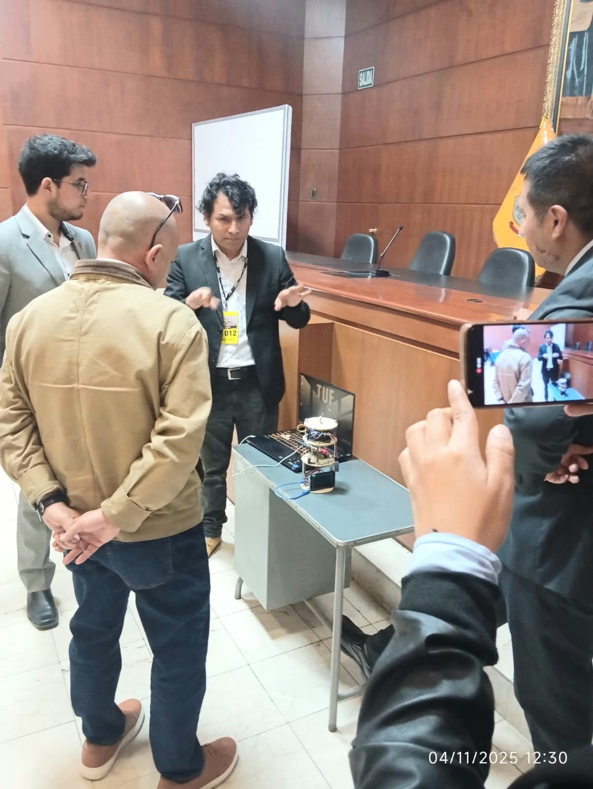
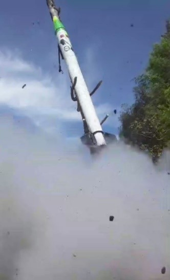
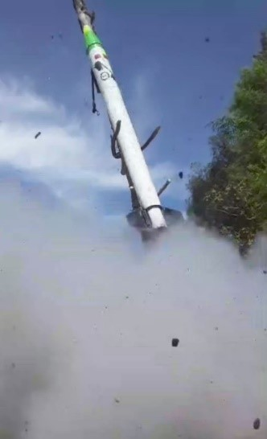

Tecnologia Aeroespacial
En el presente espacio les presentamos la Tecnología Aeroespacial desarrollada por nuestra empresa Villa Automation S.A.C

Villa Automation desarrolla tecnología aeroespacial orientada a investigación, defensa y aplicaciones científicas. La empresa integra capacidades de diseño, simulación, fabricación y pruebas de sistemas aeroespaciales, abarcando cohetería, satélites experimentales, sistemas de control avanzado y plataformas de misión. El enfoque combina ingeniería electrónica, control automático, inteligencia artificial y tecnologías de medición ambiental.
¿Nuestros Objetivos?
Villa Automation S.A.C está desarrollando un proyecto avanzado de ingeniería relacionado con cohetes JICAAT (Jornada Internacional sobre Ciencias Avanzadas de Astrodinámica y Teledetección) y tecnologia de vehiculos aeroespaciales. Villa Automation está trabajando en un proyecto ambicioso que combina ingeniería aeroespacial, automatización y análisis de datos para desarrollar un cohete funcional. A pesar de los desafíos técnicos actuales, como fallos en el motor, este proyecto representa un paso importante hacia el avance de la tecnología espacial en la región. Este proyecto abarca el desarrollo de sistemas de propulsión eficientes. 
Cohetes experimentales JICAAT
Villa Automation lidera la línea de cohetes JICAAT, orientada a investigación y validación de tecnologías para sistemas de lanzamiento livianos. El Cohete JICAAT tiene como objetivo de ser re-utilizable en el tiempo, considerando el cuidado del medio ambiente y ser lanzados, recuperados y relanzados múltiples veces. Este sistema sera un complemento para el lanzamiento de pequeños satélites en el futuro, con fines comerciales, investigación y mitigación del medio ambiente terrestre y del espacio. Este proyecto es parte de las campaña de lanzamiento descrita en el artículo " Implementación de un programa nacional de actividades espacial del proyecto JICAAT, Perú, 2023-2032" (Villar, 2024). En consecuencia, en este artículo, presentamos como la empresa ha compartido avances significativos en este proyecto, incluyendo diseño y construcción, pruebas de encendido y ajustes finales del cohete. Además del cohete JICAAT I, Villa Automation S.A.C se está desarrollando el satélite JICAAT-V.A, un CubeSat destinado al monitoreo ambiental y de desechos espaciales. Villa Automation se encuentra en una etapa experimental y de prototipado, con proyectos como el cohete JICAAT que ya integran sistemas de guiado, navegación y control. No compite aún con empresas aeroespaciales consolidadas, pero sí se posiciona como un referente emergente en innovación tecnológica en Ayacucho. Su valor principal es la capacidad de crear desarrollos aeroespaciales de bajo costo y accesibles para investigación y educación. En el sector aeroespacial, Villa Automation tiene la oportunidad de consolidarse como un pionero regional en cohetería experimental y sistemas de control de vuelo, con proyección a integrarse en la cadena nacional e internacional de innovación. Su desafío será profesionalizar la investigación, escalar infraestructura y atraer talento e inversión para competir en proyectos aeroespaciales de mayor complejidad.

El problema que buscamos resolver es la falta de autonomía tecnológica en sistemas de guiado y control para ser implementados en lanzadores o vehículos aeroespaciales un ejemplo de ello el vehículo lanzador JICAAT, garantizando precisión, estabilidad y soberanía tecnológica para la defensa nacional peruana y aplicaciones aeroespaciales. En el presente proyecto de investigación y desarrollo se permitió demostrar la viabilidad de un sistema de guiado y control para luego ser aprobado en los lanzadores JICAAT o algún vehículo comercial desarrollado en la región de Ayacucho, aportando conocimiento, tecnología propia y capacidades estratégicas para el desarrollo aeroespacial y la defensa de nuestro país. Los resultados obtenidos en la simulación demuestran que el controlador diseñado logra un seguimiento preciso de la referencia angular, con estabilidad, bajo error estacionario y respuesta eficiente, condiciones indispensables para la operación confiable de vehículos de lanzamiento o plataformas aéreas no tripuladas. Este proyecto aporta conocimiento directamente aplicable en el fortalecimiento de los sistemas de defensa, vigilancia y control del espacio aéreo, así como en el desarrollo de tecnologías duales con fines científicos, educativos y de seguridad nacional. Asimismo, fomenta la formación de capital humano especializado y la transferencia tecnológica hacia sectores productivos e instituciones de investigación, consolidando a la región como un polo emergente en ingeniería aeroespacial.
- Diseño aerodinámico optimizado con modelado CFD.
- Control de trayectoria basado en sensores inerciales y algoritmos PID/MPC.
- Sistemas de telemetría en tiempo real y registro de datos en vuelo.
- Ensayos de estabilidad, análisis post-lanzamiento y reconstrucción de trayectoria.
- Desarrollo incremental de versiones de 1, 2 y 3 etapas para pruebas suborbitales.
 

El robot puede realizar movimientos hacia un punto de interés (ejemplo plantaciones) de manera autonoma. Luego el brazo comienza a moverse simultáneamente, ajustando su orientación respecto al entorno, lo que indica una coordinación entre la locomoción y la manipulación. El sistema de control emplea un modelo cinemático acoplado, donde el movimiento del vehículo (plataforma diferencial o 4WD) y el del brazo se sincronizan para mantener el equilibrio y la orientación.

Beneficios para la Agricultura
- Reduce costos de mano de obra.
- Mejora la productividad.
- Disminuye el uso de agua y fertilizantes.
- Incrementa la precisión y la trazabilidad.
- Permite operar incluso en condiciones adversas.

Nuestros robots colaborativos agrícolas son ideales para:
- Invernaderos.
- Cultivos hidropónicos.
- Viveros y producción de plantines.
- Investigación y desarrollo agronómico.
- Automatización de procesos de cosecha y control de variables.
Entrega y Personalización
-
Villa Automation SAC diseña y fabrica robots a medida, según el cultivo, el terreno y las necesidades del cliente.
Incluimos:
- Capacitaciones.
- Manual técnico.
- Garantía y soporte.
- Integración con sensores y módulos adicionales.

Innovación local con alcance global
Villa Automation se fundó en Ayacucho-Perú y desarrolla tecnología desde la región, trabajando en proyectos de robots colaborativos que ya se aplican en invernaderos locales. Diário Jornada Esto te da dos ventajas: Proximidad geográfica: soporte técnico local, adaptado al contexto peruano (clima, cultivos, terreno). Flexibilidad: al no depender exclusivamente de grandes fabricantes globales, pueden adaptar rápidamente soluciones personalizadas para cada cliente agrícola.Integración completa: diseño, fabricación y soporte
Villa Automation no solo vende robots o módulos; su presencia en el desarrollo aeroespacial y de automatización industrial — por ejemplo la línea de cohetes y satélites que ellos mismos desarrollan — aporta un nivel de conocimiento técnico profundo. Concytec Esto significa que puedes obtener: hardware adaptado (sensores, motores, plataformas) software de control (algoritmos de IA, navegación autónoma) soporte y mantenimiento local En comparación, muchas otras empresas agrícolas solo venden un robot estándar o importado, sin adaptarlo al cultivo o terreno local.

Enfoque agrícola-industrial y multidisciplinario
Mientras que algunos proveedores de robots colaborativos se centran únicamente en horticultura o invernaderos, Villa Automation abarca múltiples sectores: agricultura, minería, industria, defensa. Por ejemplo, su robot ya fue probado en invernaderos y también para detección de gases en minería. Diário Jornada Esto les permite aplicar tecnologías de un sector al otro — lo que puede traducirse en mayor robustez, mayor vida útil, mayor adaptabilidad.

Escalabilidad y personalización para mercados emergentes
En el contexto peruano y latinoamericano, los retos son distintos: terrenos irregulares, acceso limitado a repuestos, clima variable, necesidad de bajo costo de operación. Villa Automation entiende ese contexto y puede ofrecer soluciones diseñadas para “la región” en lugar de simplemente importar robots de alto coste pensados para mercados desarrollados. Esta ventaja es particularmente importante frente a empresas internacionales que pueden venir con tecnología de punta pero costes elevados, repuestos difíciles y adaptación limitada al contexto local.
Presupuesto de venta dependera la cantida de sensores y modulos
- Basico: 1000.0 $ (dolares)
- avanzado: 4000.0 $ (dolares)